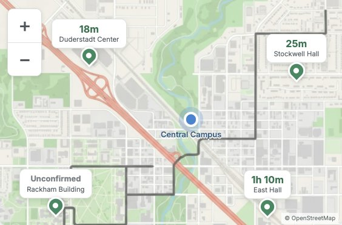

Case study · CampusBite · MHacks 2026
80 catered events. Only 3 said "free food."
A live campus map that finds leftover event food before it's thrown away, and helps students get to it in time.
Let's break my process down:
Part 1 of 4 · The project
The hunter
Who, when, and what I owned
My role · Product Manager and designer
As a grad student, I'm always hunting for free food, and this project started from that habit. I:
- Spotted the problem and measured it by auditing the U-M events calendar
- Talked to about 5 students about how they find free food and what stops them
- Designed the desktop app and the mobile layout in Figma
- Pushed for two key calls: a required food photo, and a tree that grows with your impact
Team
Chih-Chi (Joan) Huang, Wan-Lin Lin, Chih-Fan Lin
Timeline
MHacks 2026 · 2 days
Tools
Figma · VS Code · Cursor
Part 2 of 4 · Problem & research
The clues
What was really broken?
Target users
Students, especially on tight budgets, looking for a quick bite between classes. Event hosts with leftovers and no quick way to share them.
Problem statement
Students who would happily take leftover event food rarely hear about it in time, so hosts throw it away.
Product outcome we aimed for
Students can see where food is right now, and get there before it's gone.
Impact outcome we aimed for
Less food wasted on campus, and an easy way for hosts to share leftovers.
How we researched
1
keyword audit of the U-M events calendar
~5
quick conversations with students
1
outside study on leftovers per guest, to estimate impact
Insight 1 · Hosts don't write "free food." Try both searches:
{{count}}
{{countLabel}}
{{countNote}}
Pins are placed for illustration; counts are from our audit of the U-M events calendar.
The clue board · what we found
Part 3 of 4 · Decisions & pivot
The strategy
What changed our plan?
Three calls I made · what would you choose?
{{q.question}}
{{q.verdict}}
{{q.why}}
The pivot · from charts to a tree
first plan
Show impact with data only: charts of meals rescued and CO₂ avoided.
my push
Numbers feel abstract. People need a picture of their own impact, something that feels like progress.
what we built
A personal tree that grows with every pickup, next to the impact charts.
Part 4 of 4 · Solution & results
The loot
Did it work?
The loop we shipped in 2 days
1 · discover
A scraper reads public U-M event listings for the words hosts actually use.
2 · map
Live pins with countdowns show where food is right now.
3 · report
Students tap "I'm going," "Get some" or "All gone" so the map stays honest.
4 · close
Hosts post leftovers and mark them gone with a private key.
Try the real thing · our shipped screens
Claim some food, then watch your tree grow.
This is the student flow we shipped, rebuilt from our real screens. Tap inside the phone.
- {{sp.n}}{{sp.title}}{{sp.hint}}
Seed to sapling in two pickups. That small win is what brings students back.
{{cbToastText}}

emission reduced · all time
Your first report for each event waters your tree once.
Prefer to watch? See our 2-minute Devpost demo (opens YouTube).
Results
26×
more food events found: about 79 vs 3
~380
meals that could be rescued, a conservative estimate
~125 kg
of CO₂e avoided, from about 209 kg of food
Product outcome
Built: the full loop, from discovery to posting, reporting and closing an event. Not yet proven: impact is an estimate, and the tree's effect on reporting is untested.
What students said
The students we talked to said a tool like this would be really useful.
after the feast · my reflection
what went well
- Defining the problem with data first. "80 vs 3" got the whole team aligned in a two-day sprint.
- Making impact visible with the tree, not just charts.
- Balancing easy posting (no login) with trust (a required photo).
what didn't
- We only talked to one side. CampusBite is two-sided, and whether hosts will post is what makes or breaks it.
- We asked for opinions, not behavior. "This would be useful" is easy to say.
- Our impact numbers are estimates, and the tree is untested.
next time
- Interview 2–3 frequent hosts on day one.
- Ask "the last time you saw free food, what did you do?"
- Pilot with one group, like WISE, and measure real pickups and reports.
what's next
Pilot with groups that serve food often, such as WISE, Rackham and Student Life. Add sources like Maize Pages, GroupMe and Slack, alert students to food within 500 meters, and build the mobile version from the Figma designs.